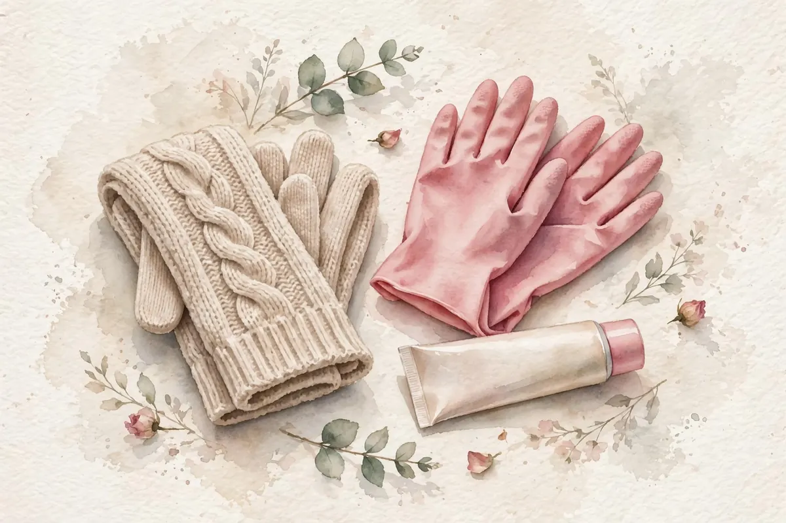

トップ ＞ ボディケア ＞ 手袋をする日のハンドケアの組み合わせ
手袋をする日のハンドケアの組み合わせ

冬の防寒や、水仕事の保護など、手袋をする場面は日常に多くあります。施術の仕事でも、手袋を使う工程があります。この記事では、手袋をする日のハンドケアの組み合わせ方を整理します。鍵は、塗るタイミングと、手袋をはめる順番です。手袋とケアは、順番を決めれば両立できる組み合わせです。
「塗って、なじませて、はめる」の順番
防寒の手袋の日は、出かける前にハンドクリームを塗り、なじませてから手袋をはめるのが基本の順番です。塗ってすぐにはめると、手袋の内側にクリームがつきやすくなります。別の支度をはさんで、表面が落ち着いてからはめる、という流れは、衣類につきにくい塗り方と同じ考え方です。出発時刻から逆算して、塗る時刻を決めておくと、朝の流れに組み込めます。
量は、普段より控えめにするのが、手袋の日の基準です。手袋の中は密閉に近い環境なので、量が多いとべたつきが残りやすくなります。指先と爪まわりまで伸ばして、手の甲は薄く、という配分も、手袋の日には組み立てやすい形です。手袋の内側にクリームがついた場合は、内側を拭く・洗うといった手袋側の手入れも、組み合わせの一部です。
水仕事の手袋は「保護」と「蒸れ」の両面を見る
水仕事で使うゴム手袋などは、水や洗剤から手を守る道具です。一方で、長時間の使用では内側が蒸れることもあります。作業が終わったら手袋を外し、手を洗って乾かし、それからクリームを塗る、という順番を決めておきます。作業の合間に外して手を休ませることも、長時間の作業では大切な段取りです。
手袋の内側の手入れも大切です。使ったあとは裏返して乾かし、内側に水分を残さないようにします。手袋が傷んできたら、保護の役割が果たせなくなる前に取り替えます。道具の管理は、手のケアと地続きです。サイズが合っていない手袋は、作業のしにくさにもつながるため、買い替えのときはサイズの確認も行います。
季節で、組み合わせを変える
冬は防寒の手袋と夜のケアの組み合わせが中心になります。就寝時に手袋や靴下のようなカバーを使う方もいますが、滑りやすさや締め付けには注意し、自分の感覚に合うものを選びます。夏は、水仕事の手袋と日中のケアが中心です。季節ごとに「手袋の場面」を書き出しておくと、ケアの置き場所も決まります。
手袋の日は、「いつ塗るか」を先に決めることが、組み合わせの要点です。出かける前、作業のあと、寝る前。場面ごとに塗るタイミングを固定しておくと、手袋とケアが喧嘩しません。
手袋の素材によっても、組み合わせは変わります。革の手袋は内側の手入れ方法が限られるため、クリームの付き方への配慮がより大切になります。洗える素材の手袋は、内側まで洗って乾かす手順を、季節の区切りに行います。手袋そのものの手入れ日を決めておくことも、組み合わせの一部です。
紛失や片方だけの傷みに備えて、買い替えの時期も決めておきます。手袋は消耗品でもあります。シーズンの始めに状態を点検し、必要なら買い替える。この点検を、ハンドケアの在庫点検と合わせて行うと、冬の準備が一度で済みます。
仕事で手袋を使う方は、作業用の手袋と防寒用を分けていることが多いと思います。それぞれに、塗るタイミングの型を持っておくと、場面ごとの迷いが減ります。手袋は、手を守る道具であると同時に、ケアの相棒です。道具とケアの順番を決めることが、この記事の要点です。手袋の日も、そうでない日も、手のケアの基本は同じです。場面ごとに型を持ち替えることが、続ける力になります。手袋とケアは、順番で仲良くなれます。
セラフィナ「塗って、なじませて、はめる。手袋の日は順番がいちばん大事だね」